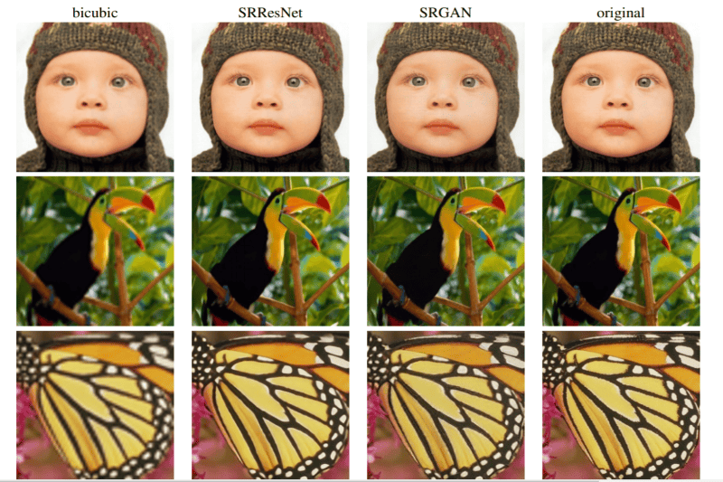

Hola, Soy Luis Espinoza!
Data Scientist
Profesional de Data Science recién graduado con habilidades en análisis de datos, estadísticas y programación. Con un fuerte interés en aprender y aplicar técnicas de Machine Learning para resolver problemas empresariales. Busco oportunidades para continuar mi desarrollo en el área y contribuir al crecimiento de una empresa.
Tipos de Proyectos Realizados
Dashboards
Dashboards interactivos y visualización de datos. Utilizando herramientas como Loocker Studio o Power BI para presentar información de manera clara y accesible, permitiendo una mejor comprensión de los datos y toma de decisiones informadas.
Exploración de Datos
La exploración de datos es esencial para tomar decisiones informadas en un negocio, ayudando a analizar grandes cantidades de información y descubrir patrones y tendencias para mejorar el rendimiento del negocio.
Data Science
Data Science es utilizado para extraer conocimientos y patrones de grandes conjuntos de datos mediante técnicas estadísticas y de aprendizaje automático. Permite obtener insights valiosos para mejorar la eficiencia del negocios.
Deep Learning
Proyectos de Deep Learning con aplicaciones en visión artificial, procesamiento del lenguaje natural y reconocimiento de patrones. Utilizando redes neuronales y algoritmos avanzados para mejorar la precisión y rendimiento.
Habilidades Técnicas
Python
SQL
Big Query
Looker Studio
Google Tag Manager
Google Analytics
Proyectos Destacados
House Sale Prices Prediction
Este notebook se enfoca en el análisis y procesamiento detallado del dataset de House Sales in King County. USA. Utiliza técnicas específicasdde exploración de datos para limpiar, procesar y entender los datos. Utiliza distintas técnicas de Machine Learning para predecir el precio de venta de las casas en el condado de King. Compara los resultados de las diferentes técnicas utilizadas y determina la mejor opción para predecir el precio de venta.
Topic Modelling on Scientific Publications
Topic modelling es una técnica utilizada para organizar y clasificar automáticamente un gran conjunto de documentos, como publicaciones científicas, mediante la identificación de temas relevantes en ellos. Esto permite a los usuarios buscar y encontrar rápidamente documentos específicos en un gran corpus de texto, mejorando la eficiencia y precisión en la búsqueda de información.
Seedbed Image Segmentation
La segmentación de imágenes en el ámbito de los semilleros se refiere a la técnica de dividir una imagen en varias regiones, cada una de las cuales representa un área de interés. Esto se utiliza para extraer información relevante de las imágenes, como contar las plantas y medir su tamaño. La segmentación de imágenes en semilleros es esencial para el monitoreo y el manejo de cultivos.
KFC Sales Data Exploration
El dataset de ventas de KFC es un conjunto de datos que contiene información detallada sobre las ventas de productos de KFC. Incluye información como el nombre del producto vendido, el precio de la venta, los descuentos aplicados, el distrito donde se realizó la venta, etc. Al realizar la exploración se busca identificar patrones y tendencias en las ventas que ayuden en la toma de decisiones en relación a la gestión de inventarios, marketing y ventas.

Productivity Prediction of Garment Employees
Este proyecto se enfoca en el análisis y procesamiento del dataset de Productividad de los empleados de una fábrica de ropa. Se utilizan técnicas de análisis de datos para limpiar, procesar y explorar los datos, identificando patrones y tendencias en la productividad de los empleados. Se usan algoritmos de Machine Learning para predecir la productividad futura. El objetivo es ayudar a la toma de decisiones en relación a la gestión de recursos humanos.
Image Super Resolution
Este notebook se enfoca en el desarrollo de un modelo de deep learning para la super resolución de imágenes. Utiliza técnicas de aprendizaje automático para aumentar la resolución de imágenes de baja resolución a alta resolución, mejorando la calidad de las imágenes. Se entrena y evalúa el modelo utilizando un conjunto de datos de imágenes de distintos modelos de carros.